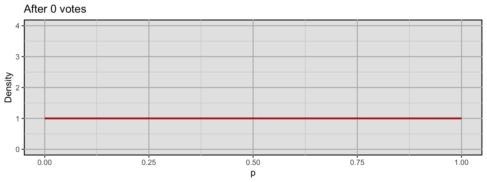
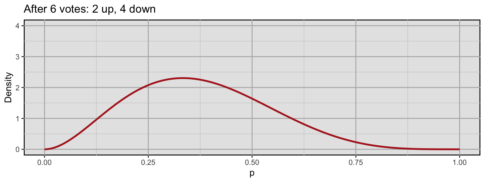
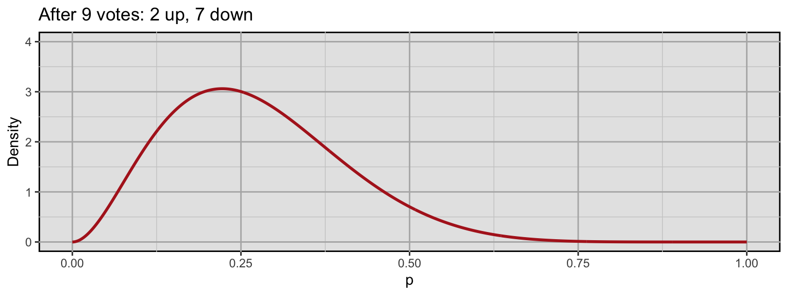
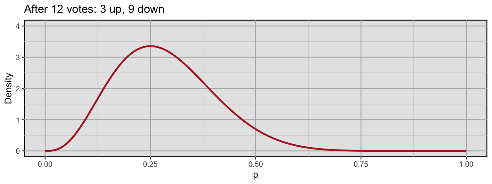
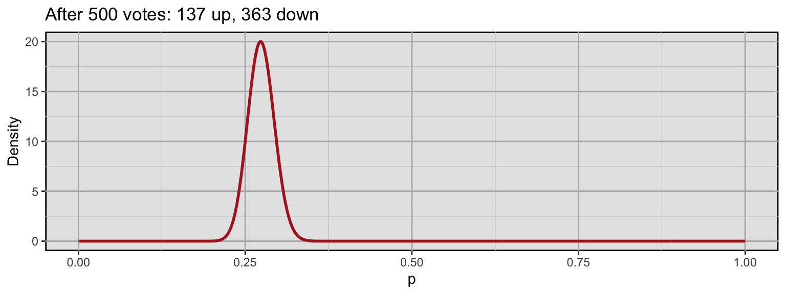
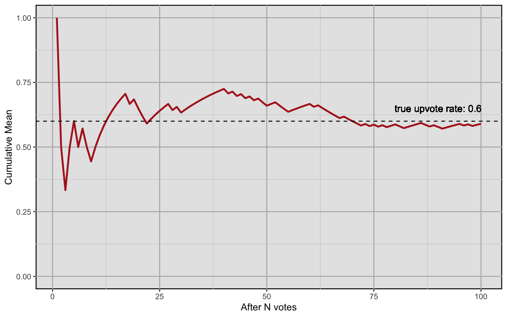
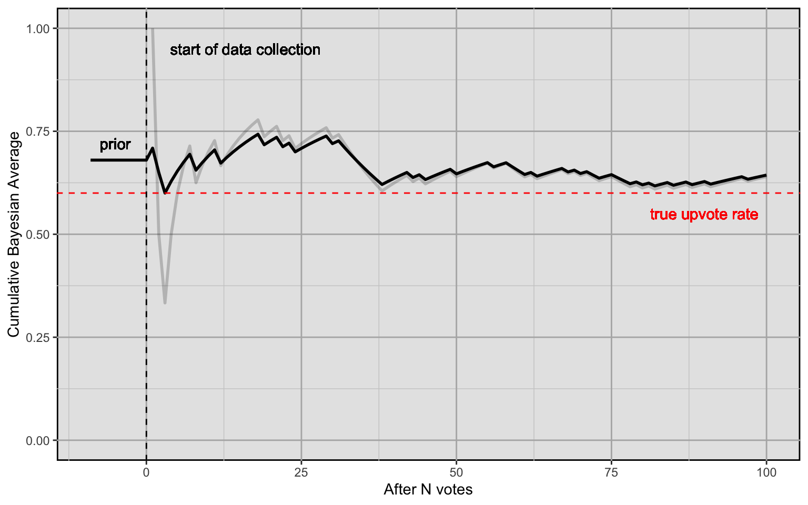
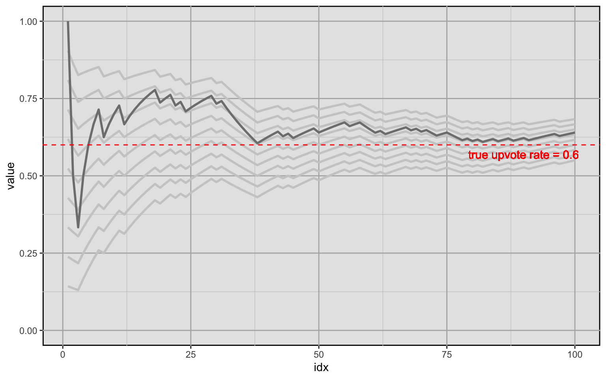
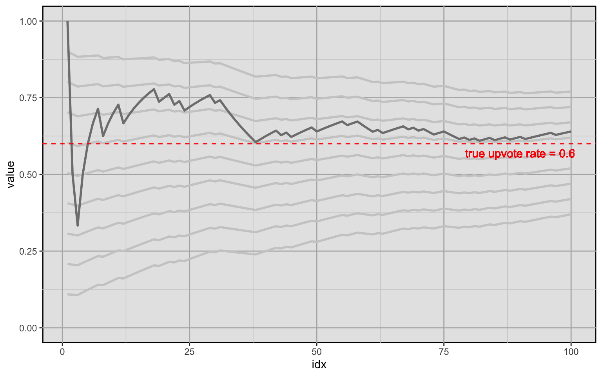

3 Estimating Upvote Rates
Users on the platform can rate content by adding an upvote or a downvote. There are two essential forms of content users can rate: posts and posts with a note. For all posts and post/note combinations, we keep a tally of upvotes and downvotes.

3.1 The Upvote Rate
The simplest way of using upvotes and downotes for rating a post is to simply calculate the ratio between them: \(upvotes:downvotes\). Or expressed as the fraction of upvotes over all votes:
\[ \frac{upvotes}{upvotes + downvotes} \]
We call this the upvote rate.
You can also think about the upvote rate as an average vote. If we model the upvote rate as a random variable, we might encode upvotes with a value of \(1\) and downvotes with a value of \(0\). A sample post’s gathered votes at a certain point in time \(t\) might look like this:
\[ (1, 0, 0, 0, 1, 0, 0, 0, 0, 1, 0, 0) \]
The post has gathered a total of 12 votes of which 3 are upvotes and 9 are downvotes. The upvote rate (i.e., the “average” vote) for this sample is:
\[ \rho = \frac{\sum_{i=1}^n x_i}{n} = \frac{upvotes}{upvotes + downvotes} = \frac{3}{3 + 9} = 0.25 \]
Modeling Belief about the “True” Upvote Rate
We assume that each post has a “true” upvote rate that we can only estimate by collecting data on it (i.e., collecting votes on a post). We think about the upvote rate as the probability of a vote being an upvote. A suitable model for proportions or probabilities is given by the Beta distribution, thus we model the true upvote rate as a random variable that follows a Beta distribution:
\[ upvoteRate \sim \beta(upvotes, downvotes) \]
The Beta distribution has two shape parameters \(\alpha\) and \(\beta\) which in our case are given by our upvote and downvote counts. To provide a more intuitive understanding of how this distribution models our upvote rate, here is an example of how it develops for an example post. We initialize the distribution with a prior of 1 upvote and 1 downvote. This is equivalent to a uniform distribution: We assign equal probability to any outcome, i.e., to any upvote rate.

Now let’s use the previous example vote sample from above:
\[ (1, 0, 0, 0, 1, 0, 0, 0, 0, 1, 0, 0) \]
Using the example above, we get the following distributions at different points in time:




The distribution updates and the probability mass becomes more concentrated around a smaller range of values which means we become more and more certain about our beliefs about the true upvote rate. If the post above would develop further with a similar trajectory, the following could be the outcome after 500 votes:

We are now relatively certain that the true upvote rate is somewhere between 0.2 and 0.3.
3.2 Estimating Upvote Rates: Naive Approach
Now that we can express our beliefs about the true upvote rate, how do we make a “best guess” at any given point in time? A naive solution would be to just take the sample upvote rate or the plain average vote as introduced above at any point in time \(t\):
\[ P_t(upvote) = \frac{\sum_{i=1}^n x_i}{n} = \frac{upvotes}{upvotes + downvotes} \]
This solution is naive because it ignores an important fact: In the beginning, we have no information about the upvote rate of the post. Thus, each new arriving vote has an outsized effect on our estimate that just gets increasingly small over time. This would result in very erratic estimates in the beginning which would only smooth out over time. Here is how the cumulative mean develops for a random vote history with a true upvote rate of 0.6:

If we were to use this metric to compare posts, getting a very high upvote rate estimate in the early stages of a post would essentially come down to luck. It might then temporarily fare overly well (or overly poorly) compared to other posts. We have to take into account prior information to avoid this.
3.3 The Bayesian Average
The Bayesian Average uses a weighted prior estimate of the average to avoid the erratic shifts in the estimate when there is not a lot of data. It is calculated as
\[ \frac{\color{blue}{C \cdot m} + \sum_{i=1}^n x_i}{\color{blue}{C} + n} \]
where \(C\) is a weight constant and \(m\) is our prior belief about the average. If you compare it to the plain average, we simply add \(C \cdot m\) to the nominator and \(C\) to the denominator.
But what does this achieve in concrete terms?
Let’s build up to this formula step by step for estimating the true upvote rate of a post. First, remember that the sample upvote rate can be thought of as the “plain” average vote. Let’s say our dataset \(X\) consists of \(1\)s and \(0\)s, where \(1\) denotes an upvote and \(0\) denotes a downvote. Then \(\sum_{i=1}^n{x_i}\) is the number of upvotes (because downvotes are encoded as \(0\)s) and \(n\) is \(upvotes + downvotes\), the total number of votes. Substituting the values in the Bayesian average formula gives us:
\[ \frac{C \cdot m + \sum_{i=1}^n x_i}{C + n} = \frac{C \cdot m + upvotes}{C + upvotes + downvotes} \]
Practically, adding these terms to our formula means that we calculate the cumulative average as if we had collected \(C\) votes with an upvote rate of \(m\) before we collected the first vote on our post.
If our prior belief about the average is 0.68 and we chose a weighting factor of 10, this would mean that we calculate the average as if we had previously collected 10 data points which amounted to an upvote rate of exactly 0.68.
Plugging in the values makes this apparent:
\[ \frac{10 \cdot 0.68 + upvotes}{10 + upvotes + downvotes} = \frac{68 + upvotes}{100 + upvotes + downvotes} \]
Graphically, it looks like this (the light grey line is the plain average for comparison):

The cumulative Bayesian average is much less erratic when little data is available. However, there is an important question left: How do we chose a good prior and a good weight?
Here is how the Bayesian average develops for different prior beliefs about the average. Bayesian averages over time are indicated by light grey lines, the priors chosen here are 0.1 through 0.9 and the weight is kept constant at 20. The plain average is overlayed in darker grey for reference.

And here is that same plot with the same priors, but with a weight of 100.
